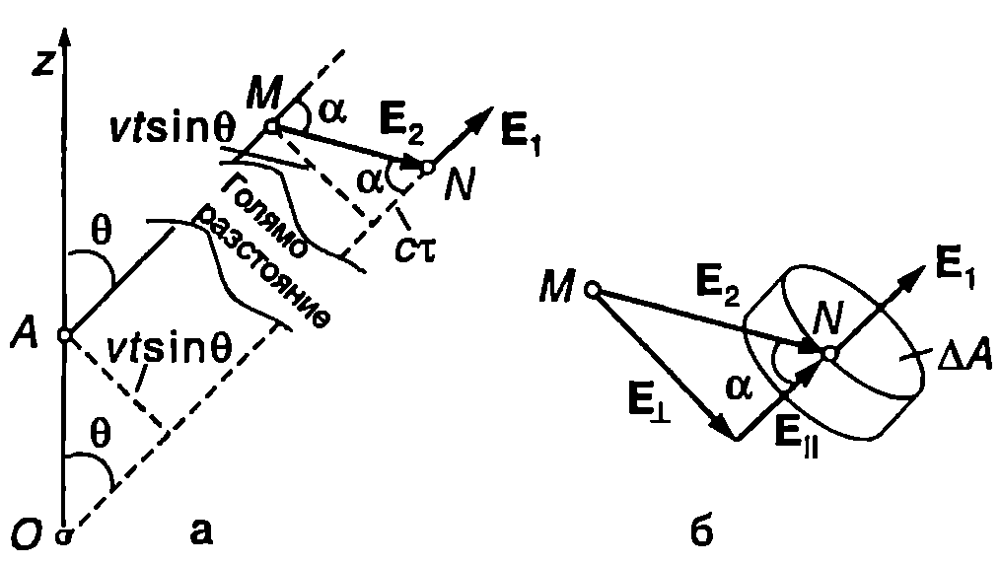
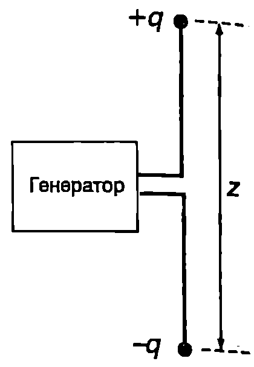
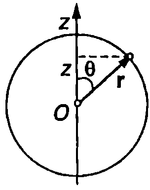
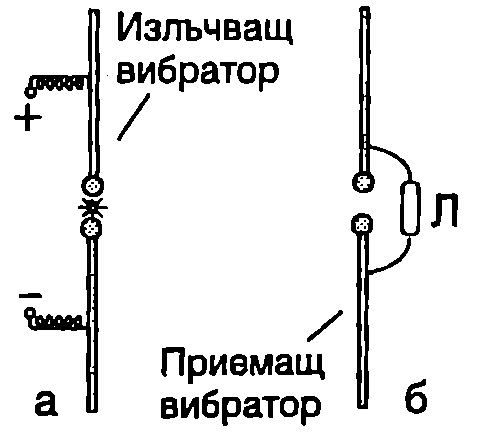
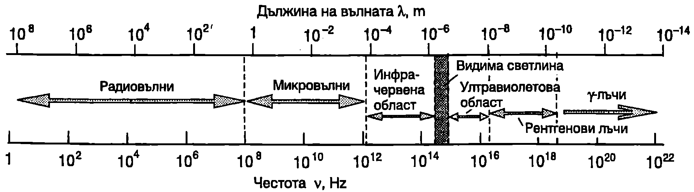

Излъчване на точков заряд
След като се запознахме с някои основни свойства на ЕМ вълни, ще се спрем на въпроса как възникват тези вълни, т.е. кои са техните източници. Електромагнитните вълни се излъчват от движещи се с ускорение електрични заряди. При равномерно праволинейно движение заредените частици не излъчват. Полето на излъчване на движещ се с ускорение точков заряд може да се определи с помощта на уравненията на Максуел. Тук ще разгледаме един опростен модел, предложен от Дж. Томсън, който позволява да се разбере механизмът на излъчването и да се получат основните количествени закономерности.
На Фиг. \ref{fig:86.1} е показан точков заряд (), който отначало се намира в покой в точка . В момента зарядът започва да се движи с постоянно ускорение по посока на оста . За малък интервал от време зарядът достига скорост , след което продължава да се движи праволинейно и равномерно. За време зарядът изминава пътя между точките и . Разстоянието, изминато с ускорение, е пренебрежимо малко в сравнение с , защото по условие .
\begin{figure}[h!]
\centering
 \caption{}
\label{fig:86.1}
\end{figure}
\caption{}
\label{fig:86.1}
\end{figure}
Измененията на полето, свързани с ускорителното движение на заряда, се разпространяват със скоростта на светлината . В момента тези изменения още не са достигнали до точките, лежащи извън сферата с радиус и център в точка . На разстояние от точка електричното поле е същото, каквото създава неподвижен заряд , поставен в точка . Интензитетът на това електростатично поле е
В сфера с радиус електричното поле е поле на движещ се праволинейно и равномерно точков заряд. Доказва се, че когато скоростта на заряда е много по-малка от скоростта на светлината , електричното поле на движещия се праволинейно и равномерно точков заряд е приблизително същото, както на неподвижен заряд, който в дадения момент се намира в точката, през която преминава движещият се заряд. Силовите линии на това поле в момента са показани на Фиг. \ref{fig:86.1}. Измененията на електричното поле, породени от движението с ускорение, са съсредоточени в сферичен слой с дебелина , който се отдалечава от точка със скорост . В този слой силовите линии се пречупват (Фиг. \ref{fig:86.1}).
Да разгледаме силова линия, която сключва ъгъл с оста (Фиг. \ref{fig:86.2}а). Силовите линии винаги са непрекъснати. В участъка силовата линия, както вече отбелязахме, съвпада със силова линия на полето на неподвижен заряд , разположен в точка . След точка силовата линия е на електростатично поле на точков заряд , разположен в точка . Ще покажем, че в участъка силовата линия характеризира електрично поле, което има две компоненти: електростатично поле и електрично поле на лъчението. Пречупването на силовата линия е свързано именно с наличието на електрично поле на лъчението. От правоъгълния триъгълник на Фиг. \ref{fig:86.2}а определяме ъгъла , под който се пречупва силовата линия:
Точката лежи върху сферата с радиус (Фиг. \ref{fig:86.1}). При преминаване през тази точка електричното поле се изменя със скок, поради което силовата линия се пречупва. Непосредствено след , извън сферата, интензитетът на полето съвпада с интензитета на електростатичното поле на точков заряд , разположен в точка . Векторът на интензитета на електричното поле в точка може да се разложи на две компоненти: , където компонентата е успоредна на , а компонентата е перпендикулярна на (Фиг. \ref{fig:86.2}б). Ще покажем, че двата успоредни вектора и са равни по големина. За целта ще приложим закона на Гаус за малка цилиндрична затворена повърхност, обхващаща точка , чиито основи с площ са перпендикулярни на векторите и :
където е отчетено, че в обема, заграден от гаусовата повърхност, няма електрични заряди (). От горното равенство получаваме, че . Следователно компонентата на електричното поле в точка съвпада с полето на неподвижен точков заряд, поставен в точка , и се изразява с формула \eqref{eq:86.1}. От чертежа на Фиг. \ref{fig:86.2}б и от уравнение \eqref{eq:86.2} определяме компонентата :
След като заместим , и от уравнение \eqref{eq:86.1} в \eqref{eq:86.3}, за интензитета окончателно получаваме
\begin{figure}[h!] \centering  \caption{} \label{fig:86.2} \end{figure} Напречната компонента е равна на интензитета на електричното поле на електромагнитната вълна, която е излъчил зарядът при движението с ускорение. Вълната е сферична, разпространява се в радиално направление и във всяка точка от нея векторът е перпендикулярен на посоката на разпространение. Ще обърнем внимание, че за разлика от интензитета на електростатичното поле, който намалява обратнопропорционално на квадрата на разстоянието (), интензитетът на електричното поле на вълната намалява много по-бавно: обратнопропорционално на разстоянието (). Затова на голямо разстояние от източника електростатичното поле може да не се отчита.
Всички получени дотук резултати са в сила и за магнитната индукция на електромагнитното поле, тъй като за всяка точка от ЕМ вълна .
Важно е да се отбележи, че интензитетът на електричното поле на вълната в точка, разположена на разстояние от източника, не зависи от ускорението на заряда в момента , когато се определя , а от ускорението му в един по-ранен момент . Това е моментът на излъчването на вълната, която след като измине разстояние за време , в по-късния момент преминава през точката на наблюдение.
Уравнение \eqref{eq:86.4} за полето на излъчване остава в сила и в случая, когато зарядът през цялото време се движи с ускорение, но по такъв начин, че да остава в близост до точка . Най-прост пример за такова движение е хармоничното трептене с малка амплитуда около равновесното положение . Тогава зарядът излъчва непрекъснато ЕМ вълни, чийто интензитет на електричното поле на разстояние от точка е
Излъчване на електричен дипол
Електричен заряд извършва хармонично трептене около точка в направление на оста и по закона
Ускорението на заряда е
Заместваме ускорението от уравнение \eqref{eq:86.7} в \eqref{eq:86.5} и като отчетем “закъснението” на вълната интензитетът на електричното поле на вълната на разстояние от източника в момента се определя от ускорението на заряда в по-предния момент , получаваме
Нека добавим в точка неподвижен точков заряда. Двата заряда образуват електричен дипол с променлив диполен момент , където e амплитудата (максималната стойност) на диполния момент. Тъй като неподвижният заряд не излъчва, полето на излъчване не се променя, а уравнение \eqref{eq:86.8} може да се запише във вида
Полученото уравнение е в сила, ако разстоянието между зарядите в дипола е много по-малко от дължината на вълната на излъчване. Освен това точката на наблюдение трябва да е достатъчно отдалечена, т.е. трябва да е изпълнено условието . Когато , точката на наблюдение се намира в т.нар. вълнова зона на източника.
Формула \eqref{eq:86.9} изразява полето на излъчване на електричен дипол, чийто диполен момент се изменя с течение на времето по хармоничен закон. Възможни са два случая: 1. разстоянието между зарядите се изменя по хармоничния закон \eqref{eq:86.6}; 2. големината на самите заряди на дипола се изменя по хармоничния закон . Вторият случай се използва в радиотехниката. Излъчващата антена представлява електричен дипол, чийто заряд се изменя по хармоничен закон с кръгова честота , равна на кръговата честота на източника на променливо ЕДН (генератор), към който е свързана антената (Фиг. \ref{fig:86.3}).
\begin{figure}[h!] \centering  \caption{} \label{fig:86.3} \end{figure}
Електричните диполи излъчват сферични вълни. Вълновите фронтове са концентрични сфери, в центъра на които се намира излъчващият дипол. Електричното поле на ЕМ вълна обаче не притежава сферична симетрия. Както се вижда от уравнение \eqref{eq:86.8}, интензитетът зависи от ъгъла . В направление на оста г, по която е ориентиран диполът, той не излъчва: при . Излъчването е максимално при , т.е в направление, перпендикулярно на направлението на трептене.
Интензитет и мощност на излъчването
Повдигаме двете страни на уравнение \eqref{eq:86.9} на квадрат, осредняваме по времето и като отчетем, че , получаваме средната стойност на . След това заместваме в уравнение \eqref{eq:85.7} и определяме интензитета на ЕМ вълна, излъчена от електричен дипол:
Зависимостта на интензитета от направлението се определя от множителя . Графиката на функцията изразява т.нар. диаграма на насоченост (Фиг. \ref{fig:86.4}). По оста , в направление на която ориентиран диполът, излъчване няма. При увеличаване на ъгъла интензитетът нараства и достига максимална стойност в перпендикулярното на оста направление.
\begin{figure}[h!]
\centering
 \caption{}
\label{fig:86.4}
\end{figure}
\caption{}
\label{fig:86.4}
\end{figure}
За да определим пълния поток на енергията през сфера с радиус , в центъра на която се намира излъчващият дипол, ще заменим зависещия от ъгъла в интензитет с ефективен среден интензитет , еднакъв за всички точки от сферата. Радиус-векторът на произволна точка от сферата има -компонента (Фиг. \ref{fig:86.5}) . Вдигаме двете страни на това равенство на квадрат и изразяваме : \begin{figure}[h!] \centering  \caption{} \label{fig:86.5} \end{figure}
От друга страна, за всяка точка от сферата е в сила уравнението . Поради сферичната средните стойности на , , , когато осредняването се извършва по всички направления, са равни. Следователно
Средната стойност на е
Следователно средната стойност на функцията e
където осредняването е извършено за всички направления в пространството, т.е. по всички възможни стойности на ъгъла . От уравнение \eqref{eq:86.10}, след като отчетем \eqref{eq:86.12}, получаваме ефективния интензитет на вълната, осреднен по ъгъла :
Тъй като диполът излъчва във вакуум, излъчената енергия не се поглъща и се Пренася от ЕМ вълна без загуби. Съгласно със закона за запазване на енергията средната мощност на излъчването е равна на енергията, пренесена за единица време от вълната през цялата повърхност на разглежданата сфера:
Следователно излъчената мощност е правопропорционална на квадрата на амплитудата на диполния момент и на четвъртата степен на кръговата честота на излъчвателя (кръговата честота, с която се изменя диполният момент). Ще обърнем специално внимание на силната зависимост на мощността от кръговата честота. Например, ако нарастне 2 пъти, мощността на излъчване се увеличава 16 пъти! Затова лъчение с достатъчно голяма за практически цели мощност се получи при висока честота на трептене на излъчващия дипол.
Вибратор на Херц
\begin{figure}[h!] \centering  \caption{} \label{fig:86.6} \end{figure}
Електромагнитните вълни са открити експериментално от Хайнрих Херц през 1887 г. (8 години след смъртта на Максуел). За да получи необходимата висока честота, Херц използва собствените трептения на открит вибратор, съставен от две еднакви метални пръчки, разделени от искрова междина (Фиг. \ref{fig:86.6}а). Пръчките се зареждат от източник на високо напрежение. При определено напрежение се извършва електричен пробив на въздуха между пръчките и протича искров разряд. Двете части на вибратора се свързват електрически чрез искрата между тях, при което възникват затихващи електромагнитни трептения с висока честота. Вибраторът е свързан към източник на напрежение през две намотки с голяма индуктивност (дросели), които не позволяват високочестотните токове да преминават през източника. Токът тече само по пръчките, като отдалечените им краища се зареждат с разноименни заряди, които се изменят с течение на времето по периодичен закон: вибраторът представлява електричен дипол с осцилиращ диполен момент, излъчващ ЕМ вълни. За регистриране на вълните Херц използва втори вибратор, еднакъв по форма и размери с излъчващия вибратор (Фиг. \ref{fig:86.6}б). Под действие на електричното поле на електромагнитната вълна електроните от приемащия вибратор извършват принудени трептения и в него протичат високочестотни токове. Възниква променливо напрежение, което може да се регистрира например по светенето на малка газоразрядна тръба Л, свързана към двете половини на вибратора. Когато излъчващият и приемащият вибратор имат еднакви размери, собствените честоти на техните ЕМ трептения съвпадат и възбудените в приемника резонансни трептения имат максимална амплитуда. С помощта на подобни вибратори Херц успява да получи ЕМ вълни с дължина на вълната от 0,6 m до 10 m и потвърждава основните изводи от теорията на Максуел.
В съвременната наука и техника за излъчване и приемане на ЕМ вълни от радиодиапазона се използват различни видове антени. Например в радиоастрономията и за нуждите на спътниковата телевизия се използват антени със сферични или параболични отразяващи повърхности, в чиито фокус е поставен облъчвател. ЕМ вълни се концентрират върху облъчвателя, съдържащ вериги от диполи, в които ЕМ поле на вълната възбужда принудени трептения. Тези трептения след това се усилват и обработват от специална електронна апаратура. Основни характеристики на антената са честотният диапазон, за който тя е предназначена, и нейната диаграма на насоченост на излъчване или приемане на ЕМ вълни. \begin{figure}[h!] \centering  \caption{Спектър на електромагнитните вълни.} \label{fig:86.7} \end{figure}
**Спектър на електромагнитните вълни **
При механичните вълни съществува минимална възможна дължина на вълната (максимална честота), която се определя от дискретния строеж на материалните среди: е от порядъка на разстоянието между два съседни атома (молекули) от средата. Тъй като ЕМ вълни представляват трептения на ЕМ поле, а не на частиците на материална среда, при тях няма принципни ограничения за честотата. На Фиг. \ref{fig:86.7} е представен спектърът на електромагнитните вълни. С най-голяма дължина на вълната и най-малка честота са радиовълните. Те се излъчват от антени, по които текат променливи токове. С по-голяма честота са микровълните. За източници на такива вълни се използват специални вакуумни електронни тръби. След микровълните е разположена инфрачервената област на спектъра. Инфрачервените лъчи са невидими за човешкото око. Основната част от енергията на топлинното излъчване на телата, които се намират при не много високи температури (например близки до стайната температура), е в инфрачервената област на спектъра. Инфрачервено излъчване предизвикват също трептенията на молекулите на газовете и течностите. Човешкото око е чувствително и възприема като светлина само една много малка част от спектъра на ЕМ вълни. Честотата на видимата светлина лежи в интервала от Hz до Hz. Главният естествен източник на светлина за нас е Слънцето. Спектърът на топлинното му излъчване съдържа както видима светлина, така и инфрачервено и ултравиолетово излъчване. След ултравиолетовата област на спектъра следват рентгеновите лъчи и -лъчите.